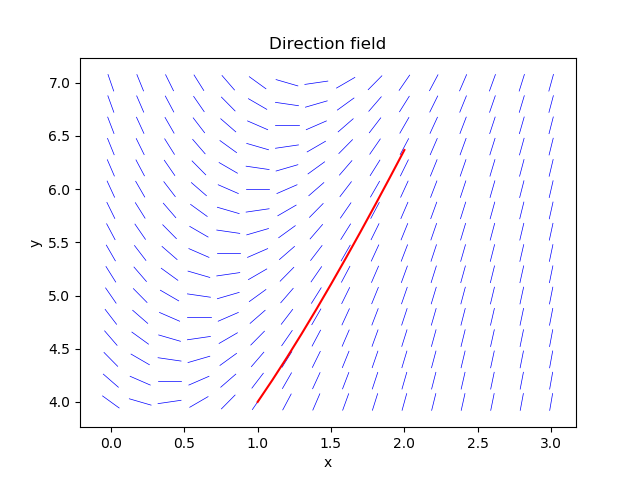

Direction fields can give us some information about the solution to a differential equation without actually having the solution.
# dy/dx = f(x,y)
# Example: dy/dx = 3(1+x)-y, y(1) = 4, x in [1, 2].
# Exact solution: y(x) = 3*x + exp(1-x)
import numpy as np
import matplotlib.pyplot as plt
x = np.linspace(0, 3, 16)
y = np.linspace(4, 7, 16)
f = lambda x, y: 3*(1+x)-y
dx = x[1] - x[0]
dy = y[1] - y[0]
for xx in x:
for yy in y:
Dy = f(xx, yy) * dx
Dx = (0.8 * dx) * dx / np.sqrt(dx**2 + Dy**2)
Dy = (0.8 * dy) * Dy / np.sqrt(dx**2 + Dy**2)
plt.plot([xx - Dx/2., xx + Dx/2.], [yy - Dy/2., yy + Dy/2.], 'b', lw=0.5)
x_exact = np.linspace(1, 2, 11)
y_exact = 3*x_exact + np.exp(1-x_exact)
plt.plot(x_exact, y_exact, 'r')
plt.title("Direction field")
plt.xlabel("x")
plt.ylabel("y")
plt.show()
